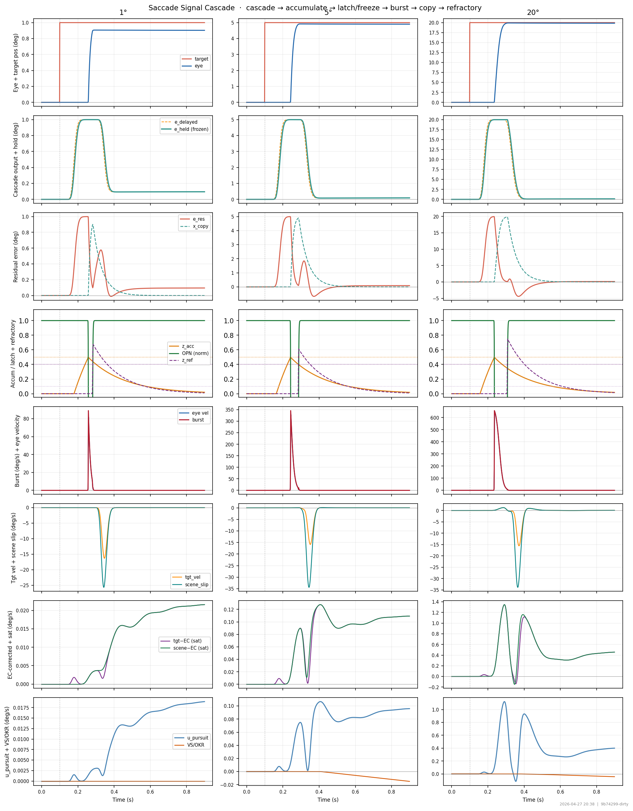
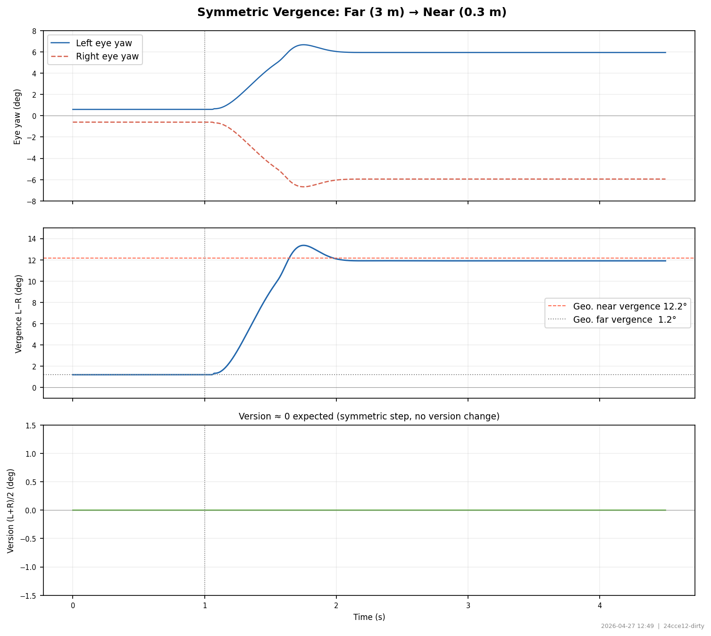
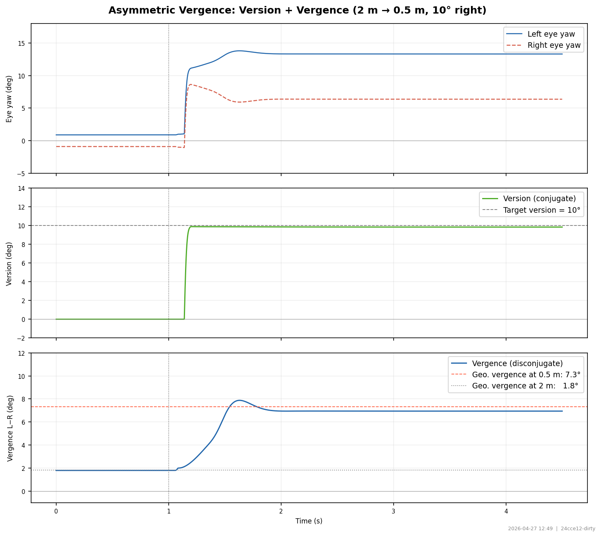

OculomotorJax — Benchmark Report
1. Saccades
Saccade kinematics and internal signal cascade. Tests main sequence (amplitude–velocity), oblique trajectory linearity, double-step refractoriness, and the full Robinson cascade.

Saccade Main Sequence
Peak velocity vs amplitude scatter (left) and aligned eye traces (right) for amplitudes 0.5–20°.
📖 Bahill et al. (1975) Science; Robinson (1975) J Neurophysiol
behavior
Oblique Saccades
Sequence of saccades to 5 oblique targets. Left: 2D trajectory. Center/right: H and V components.
📖 Smit et al. (1990) J Neurophysiol
behavior
Saccade Double-Step Refractoriness
Double-step paradigm: target jumps 0→10° then 10→20° after variable ISI. Short ISIs produce a single amended saccade (refractory); longer ISIs produce two.
📖 Becker & Jürgens (1979) Vision Res
behavior
Saccade Signal Cascade (Internal)
Row-by-row signal flow for 1°, 5°, 20° saccades: position, visual cascade + hold, accumulator/latch, residual error, burst, eye velocity, refractory state.
📖 Robinson (1975) J Neurophysiol; Scudder et al. (2002)
cascade2. VOR / OKR
Vestibulo-ocular reflex and optokinetic response. Replicates Raphan et al. (1979) Fig.9: VOR in dark, OKN+OKAN, and VVOR. Tests post-rotatory and OKAN time constants, VVOR gain, and nystagmus waveform.

Raphan 1979 Fig. 9 Replication
Panels A–F matching Raphan et al. (1979) Fig.9. Left col: SPV only. Right col: CUP (canal estimate), INT (velocity storage), SPV overlaid. A/B: VOR in dark. C/D: OKN+OKAN. E/F: VVOR (light→dark).
📖 Raphan, Matsuo & Cohen (1979) Exp Brain Res 35:229–248
behavior
VOR / OKR Signal Cascade (Internal)
Left column (VOR in dark): head velocity → canal afferents → VS state → NI state → eye velocity. Right column (OKN): scene velocity → delayed retinal slip → VS → NI → eye velocity.
📖 Raphan et al. (1979); Robinson (1975)
cascade3. Gravity Estimator
Canal-otolith interaction: OCR, OVAR, VOR tilt suppression, OCR vs tilt angle, somatogravic OCR frequency dependence. Parameters: K_grav=0.6, K_gd=0.5, g_ocr=0.6116207951070336 (Laurens & Angelaki 2011).

Ocular Counterroll (OCR)
Counter-roll traces for tilts [5.0, 10.0, 20.0, 30.0, 45.0, 60.0, 75.0, 90.0]° + SS scatter. g_ocr=0.61.
📖 Boff, Kaufman & Thomas (1986); Laurens & Angelaki (2011)
behavior
OVAR — Off-Vertical Axis Rotation
60°/s rotation, tilt angles [10.0, 30.0, 60.0, 90.0]°. Replicates Laurens & Angelaki (2011) Fig 5.
📖 Laurens & Angelaki (2011) Exp Brain Res 210:407
behavior
VOR Tilt Suppression
Upright 60°/s yaw; tilt [0.0, 30.0, 60.0, 90.0]° applied after stop. Replicates Laurens & Angelaki (2011) Fig 6.
📖 Laurens & Angelaki (2011) Exp Brain Res
behavior
Somatogravic OCR — Frequency Dependence
Sinusoidal lateral translation at [0.03, 0.07, 0.15, 0.3, 0.7, 1.5] Hz, 2.0 m/s² peak. OCR via gravity estimator LP filter.
📖 Mayne (1974); Laurens & Angelaki (2011)
behavior4. Smooth Pursuit
Smooth pursuit and catch-up saccades. Tests velocity gain at multiple speeds, sinusoidal tracking, and the pursuit integrator + saccade interaction cascade.

Smooth Pursuit — Velocity Range
Step-ramp target at 5, 10, 20, 40 deg/s. Blue: smooth pursuit enabled. Gray: saccades only (pursuit off). Rows: position, velocity, pursuit integrator state.
📖 Lisberger & Westbrook (1985) J Neurosci; Rashbass (1961)
behavior
Sinusoidal Pursuit (H + V)
Horizontal sinusoidal target at 0.2, 0.5, 1.0 Hz (peak 15 deg/s). Vertical at 2× horizontal frequency for Lissajous trajectory. Rows: H position, V position, 2D trajectory.
📖 Lisberger et al. (1981) J Neurophysiol
behavior
Smooth Pursuit Signal Cascade (Internal)
Full signal chain for 20 deg/s pursuit: position, velocity, pursuit integrator state, visual cascade error, accumulator/latch for catch-up saccades, burst, refractory state.
📖 Lisberger & Westbrook (1985)
cascade5. Vergence
Binocular vergence eye movements driven by disparity. Symmetric convergence isolates vergence dynamics. Asymmetric vergence combines a version saccade with a depth change.

Symmetric Vergence (Convergence)
Both eyes converge symmetrically when a near target appears at midline. Saccades disabled to isolate vergence dynamics.
📖 Mays (1984) J Neurophysiol; Cumming & Judge (1986) J Physiol
behavior
Asymmetric Vergence
Target moves 10° rightward AND closer (2 m → 0.5 m). Version (conjugate) and vergence (disconjugate) should separate.
📖 Collewijn et al. (1988) J Physiol; Zee et al. (1992)
behavior6. Fixation
Fixational eye movements driven by different noise sources. Tests canal noise filtering, retinal position OU drift (microsaccades), and retinal velocity noise (pursuit-like drift).

Fixational Eye Movements — Noise Source Comparison
5-column comparison: noiseless, canal noise only, retinal position OU drift, retinal velocity noise, and all three combined. Rows: eye position, velocity, saccade burst, noise signal.
📖 Rolfs (2009) Neurosci Biobehav Rev 33:1597–1627
behavior7. Listing's Law
Torsional constraint T = OCR − H·V·π/360: saccade plane scatter and OCR-driven correction saccade.

Listing's Plane
Saccades to a (H, V) grid; torsion measured at steady state. g_ocr=0 so OCR=0 and T_required = −H·V·π/360.
📖 Tweed, Haslwanter & Fetter (1998) IOVS 39:1449; van Rijn & van den Berg (1993) Exp Brain Res 95:507; Listing (1854) Beitrag zur physiologischen Optik
behavior
OCR Torsional Correction Saccade
Head tilt 30°; g_ocr=1.02. Torsional listing error drives a corrective saccade.
📖 Listing (1854); Tweed et al. (1998)
behavior
Listing's Plane During Smooth Pursuit
Sinusoidal H pursuit (15° at 0.5 Hz) at V=20°. vel_torsion demand added to NI keeps torsion on Listing's plane continuously.
📖 Tweed, Haslwanter & Fetter (1998) IOVS; van Rijn & van den Berg (1993) EBR
behavior